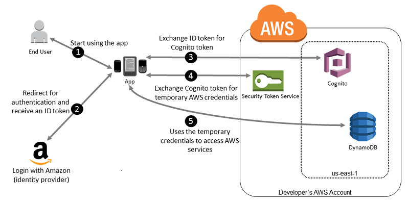

Test Report
Review questions
 13 correct
13 correct 52 incorrect
52 incorrectYour answer
B. Create an "Images" DynamoDB table to store the Image with a foreign key constraint to the "Product" table.
C. Add an image data type to the "Product" table to store the images in binary format
D. Store the images in Amazon S3 and add an S3 URL pointer to the "Product" table item for each image
Correct answer is D as DynamoDB is not ideal for image storage and the image should rather be stored in S3, with the image pointer in DynamoDB.
Refer AWS Storage Options Whitepaper
Option A & B are wrong as DynamoDB is not ideal for image storage.
Option C is wrong as there is no image data type
Your answer
B. Host the website using AWS Elastic Beanstalk and map a Route 53 alias record to the Beanstalk stack.
C. Host the website on an Amazon EC2 instance and map a Route 53 alias record to the public IP address of the Amazon EC2 instance.
D. Serve the website from an Amazon S3 bucket and map a Route 53 alias record to the website endpoint.
E. Create a Route 53 hosted zone and set the NS records of the domain to use Route 53 name servers.
E. Create a Route 53 hosted zone and set the NS records of the domain to use Route 53 name servers.
Correct answers are D & E as the static website can be hosted on S3 providing scale as well as a cost effective solution. An Alias record with hosted zone can be created in Route 53 to point the domain to S3.
Refer AWS documentation - Route 53 Routing to S3 bucket
Amazon Simple Storage Service (Amazon S3) provides secure, durable, highly scalable cloud storage. You can configure an S3 bucket to host a static website that can include web pages and client-side scripts. (S3 doesn't support server-side scripting.)
To route domain traffic to an S3 bucket, use Amazon Route 53 to create an alias record that points to your bucket. An alias record is a Route 53 extension to DNS. It's similar to a CNAME record, except you can create an alias record both for the root domain, such as example.com, and for subdomains, such as www.example.com. You can create CNAME records only for subdomains.
Your answer
B. Use Amazon SQS to distribute messages among workers that are less busy
C. Use an Auto Scaling group and ELB Classic Load Balancer for the application tier.
D. Use Data Pipeline to replicate your relational data across all of your web tier nodes
Correct answer is A as ElastiCache can help improve performance by caching the results as the operations are mainly read-heavy, and database queries will be computationally intensive
Refer AWS Storage Options Whitepaper
ElastiCache improves application performance by storing critical pieces of data in memory for low-latency access. It is frequently used as a database front end in read-heavy applications, improving performance and reducing the load on the database by caching the results of I/O-intensive queries. It is also frequently used to manage web session data, to cache dynamically-generated web pages, and to cache results of computationally-intensive calculations, such as the output of recommendation engines. For applications that need more complex data structures than strings, such as lists, sets, hashes, and sorted sets, the Redis engine is often used as an in-memory NoSQL database.
Points : 3 out of 3
Your answer
B. Add a random prefix to the key names
C. Amazon S3 will automatically manage performance at this scale.
D. Use a predictable naming scheme, such as sequential numbers or date time sequences, in the key names
Correct answer is B
NOTE - Circa July 2018 as per recent AWS announcement, there has been vast change in the S3 performance and the documentation has been updated.
Refer AWS documentation - S3 Performance
One way to introduce randomness to key names is to add a hash string as prefix to the key name. For example, you can compute an MD5 hash of the character sequence that you plan to assign as the key name
Option A is wrong as multi part upload only helps improve object upload times
Option C is wrong as Amazon S3 scales to support very high request rates. However, If your workload in an Amazon S3 bucket routinely exceeds 100 PUT/LIST/DELETE requests per second or more than 300 GET requests per second it is recommended to implement best practices.
Option D is wrong as using predictable naming scheme would reduce the performance
Your answer
B. Cache database queries in amazon ElastiCache
C. Setup RDS in multi-availability zone mode.
D. Shard the database and distribute loads between shards.
E. Use amazon CloudFront to cache database queries.
B. Cache database queries in amazon ElastiCache
D. Shard the database and distribute loads between shards.
Correct answers are A, B & D as the main issue is slow performance from DB.
Read Replicas, ElastiCache can help improve Read performance while Sharding can help improve write performance
Option C is wrong RDS Multi-AZ is more of a High Availability solution
Option E is wrong as CloudFront cannot cache database queries.
Your answer
B. Backup the EBS data volume. If the instance fails, bring up a new EC2 instance and attach the volume.
C. Store the EC2 data on S3. If the instance fails, bring up a new EC2 instance and restore the data from S3.
D. Create an AMI of the EC2 Instance and copy it to another region.
Correct answer is D as AMIs can be created with software installed and as AMIs are regional scoped they can be copied to another region for launching instances.
Refer AWS documentation - AMI Cross Region Copy
Copying an AMI across geographically diverse regions provides the following benefits:
- Consistent global deployment: Copying an AMI from one region to another enables you to launch consistent instances in different regions based on the same AMI.
- Scalability: You can more easily design and build global applications that meet the needs of your users, regardless of their location.
- Performance: You can increase performance by distributing your application, as well as locating critical components of your application in closer proximity to your users. You can also take advantage of region-specific features, such as instance types or other AWS services.
- High availability: You can design and deploy applications across AWS regions, to increase availability.
Option A is wrong as it is an AZ does not give HA when the region fails,
Option B is wrong as the preconfigured software could have settings on the root volume and the snapshot needs to be copied across region to recreate volumes.
Option C is wrong as this is a long and inefficient way to restore a failed instance.
Your answer
B. Bastion hosts are instances that sit within your private subnet and are typically accessed using SSH or RDP. Once remote connectivity has been established with the bastion host, it then acts as a 'jump' server, allowing you to use HTTPS to log into other instances (within public subnets) deeper within your network.
C. Bastion hosts are instances that sit within your public subnet and are typically accessed using SSH or RDP. Once remote connectivity has been established with the bastion host, it then acts as a ‘jump’ server, allowing you to use HTTPS to log into other instances (within private subnets) deeper within your network.
D. Bastion hosts are instances that sit within your public subnet and are typically accessed using SSH or RDP. Once remote connectivity has been established with a bastion host, it then acts as a ‘jump’ server, allowing you to use SSH or RDP to log into other instances (within private subnets) deeper within your network.
Correct answer is D as Bastion hosts act as a jump server in the public subnet, to allow SSH/RDP access to the instances in the private subnets.
Option A & B are wrong as Bastion should be in public subnet and internet accessible.
Option C is wrong as Bastion allows only SSH/RDP and not HTTPS connections.
Your answer
B. Enable source destination check on private Amazon EC2 instances.
C. Enable AWS CloudTrail logging and specify an Amazon S3 bucket for storing log files.
D. Create an Amazon CloudWatch logs to capture packet information.
Correct answer is A as only VPC flows allows you to track and capture all information going into and out of network interfaces within a VPC.
Refer AWS documentation - VPC Flow Logs
VPC Flow Logs is a feature that enables you to capture information about the IP traffic going to and from network interfaces in your VPC. Flow log data can be published to Amazon CloudWatch Logs and Amazon S3. After you've created a flow log, you can retrieve and view its data in the chosen destination.
Flow logs can help you with a number of tasks; for example, to troubleshoot why specific traffic is not reaching an instance, which in turn helps you diagnose overly restrictive security group rules. You can also use flow logs as a security tool to monitor the traffic that is reaching your instance.
Option B is wrong as Source/Destination check does not track packets information. Each EC2 instance performs source/destination checks by default. This means that the instance must be the source or destination of any traffic it sends or receives.
Option C is wrong as CloudTrail is a service that enables governance, compliance, operational auditing, and risk auditing of your AWS account. With CloudTrail, you can log, continuously monitor, and retain account activity related to actions across your AWS infrastructure
Option D is wrong as CloudWatch cannot be used to track packet information and is a monitoring and management service.
Points : 3 out of 3
Your answer
B. Pass the access key to the instances through instance user data.
C. Obtain the access key from a key server launched in a private subnet.
D. Create an IAM role with permissions to access the table and launch all instances with the new role.
Correct answer is D as IAM roles for EC2 instances allow applications running on the instance to access AWS resources without having to create and store any access keys.
Refer AWS documentation - IAM Best Practices
Applications that run on an Amazon EC2 instance need credentials in order to access other AWS services. To provide credentials to the application in a secure way, use IAM roles. A role is an entity that has its own set of permissions, but that isn't a user or group. Roles also don't have their own permanent set of credentials the way IAM users do. In the case of Amazon EC2, IAM dynamically provides temporary credentials to the EC2 instance, and these credentials are automatically rotated for you.
When you launch an EC2 instance, you can specify a role for the instance as a launch parameter. Applications that run on the EC2 instance can use the role's credentials when they access AWS resources. The role's permissions determine what the application is allowed to do.
Your answer
B. As the load on the database increases, horizontally-scale the RDBMS database with additional memory-optimized instances. When voting has ended, scale down the additional instances.
C. Re-provision the RDBMS database with larger, memory-optimized instances. When voting end, re-provision the back-end database with smaller instances.
D. Send votes from each front-end node to Amazon DynamoDB. Provision worker instances to process the votes in DynamoDB into the RDBMS database.
Correct answer is A as SQS can help provide loose coupling and act as a buffer for database. Also, as the spike is temporary there is no need to scale the RDBMS.
Option B is wrong as Auto Scaling does not apply to RDBMS.
Option C is wrong as the RDBMS cannot be re-provisioned back with smaller instance.
Option D is wrong as DynamoDB would provide a separate duplicate persistent data store, which would be more expensive to input process and delete the data.
Points : 3 out of 3
Your answer
B. Create another DynamoDB table with the records modified in the last 2 hours.
C. Use DynamoDB Streams to monitor the changes in the DynamoDB table.
D. Transfer records to S3 which were modified in the last 2 hours.
Correct answer is C as DynamoDB streams helps monitor the change in the DynamoDB table. Second application can check the stream for the changes.
Refer AWS documentation - DynamoDB Streams
DynamoDB Streams enables solutions such as these, and many others. DynamoDB Streams captures a time-ordered sequence of item-level modifications in any DynamoDB table and stores this information in a log for up to 24 hours. Applications can access this log and view the data items as they appeared before and after they were modified, in near real time.
A DynamoDB stream is an ordered flow of information about changes to items in an Amazon DynamoDB table. When you enable a stream on a table, DynamoDB captures information about every modification to data items in the table.
Whenever an application creates, updates, or deletes items in the table, DynamoDB Streams writes a stream record with the primary key attribute(s) of the items that were modified. A stream record contains information about a data modification to a single item in a DynamoDB table. You can configure the stream so that the stream records capture additional information, such as the "before" and "after" images of modified items.
Your answer
B. A custom bucket policy limited to the Amazon S3 API in “company-backup”
C. A custom IAM user policy limited to the Amazon S3 API for the Amazon Glacier archive “company-backup”.
D. A custom IAM user policy limited to the Amazon S3 API in “company-backup”.
Correct answer is D as the IAM policy can be granted to S3 and proper lifecycle rules configured to archive the data to Glacier
Refer to the S3 IAM Policy
Option A and C are wrong as they target Glacier.
Option B is wrong as Bucket policy needs a (existing) principal, user policy needs a (existing) user/group/role
Your answer
B. Create an IAM Role and ensure the EC2 Instances use the IAM Role to access the data in the bucket.
C. Use S3 Cross-Region Replication to replicate the objects so that the integrity of data is maintained.
D. Use a S3 bucket policy that prevents accidental deletions
E. Configure S3 to use versioning and enable Multi-Factor Authentication (MFA) protected access
E. Configure S3 to use versioning and enable Multi-Factor Authentication (MFA) protected access
Correct answer is B & E
Refer AWS documentation - IAM Best Practices & S3 Versioning
S3 Object versioning prevents you from accidentally overwriting or deleting objects and affords you the opportunity to retrieve a previous version of an object.
Applications that run on an Amazon EC2 instance need credentials in order to access other AWS services. To provide credentials to the application in a secure way, use IAM roles. A role is an entity that has its own set of permissions, but that isn't a user or group. Roles also don't have their own permanent set of credentials the way IAM users do. In the case of Amazon EC2, IAM dynamically provides temporary credentials to the EC2 instance, and these credentials are automatically rotated for you.
Option A is wrong as using IAM user is not secure and not a best practice
Option C is wrong as Cross region replication creates duplicate objects increasing cost as well as they do not prevent deletion from both regions.
Option D is wrong as bucket policies cannot prevent accidental deletions and recovery
Your answer
B. Use ECS orchestration and Reserved Instances for all underlying instances.
C. Use Docker for container orchestration and a combination of Spot and Reserved Instances for the underlying instances.
D. Use ECS for container orchestration and a combination of Spot and Reserved Instances for the underlying instances.
Correct answer is D as it is cost effective to use reserved instances for long term critical batch and spot instances for non critical batch processing requirements. ECS can be used for container orchestration and support spot instances
Refer AWS documentation - ECS Spot Instances
Option A & B are wrong as they are not cost effective with only reserved instances.
Option C is wrong as Docker cannot perform container orchestration.
Your answer
B. Store data in an S3 bucket and enable versioning.
C. Store data in two S3 buckets in different AWS regions.
D. Store data on EC2 instance storage.
Correct answers are B as Object versioning would help recovery of object in case of accidental deletes or overwriting.
Refer AWS documentation - S3 Versioning
Versioning-enabled buckets enable you to recover objects from accidental deletion or overwrite. For example:
- If you delete an object, instead of removing it permanently, Amazon S3 inserts a delete marker, which becomes the current object version. You can always restore the previous version
- If you overwrite an object, it results in a new object version in the bucket. You can always restore the previous version.
Your answer
B. Add Userdata to the underlying instances to mark each environment.
C. Add Metadata to the underlying instances to mark each environment.
D. Add each environment to a separate Auto Scaling Group.
Correct answer is A as tags to resources with IAM policies can help in access control of resources belonging to different environments.
Refer AWS documentation - Tags
A tag is a label that you assign to an AWS resource. Each tag consists of a key and an optional value, both of which you define.
Tags enable you to categorize your AWS resources in different ways, for example, by purpose, owner, or environment. This is useful when you have many resources of the same type—you can quickly identify a specific resource based on the tags you've assigned to it. For example, you could define a set of tags for your account's Amazon EC2 instances that helps you track each instance's owner and stack level.
We recommend that you devise a set of tag keys that meets your needs for each resource type. Using a consistent set of tag keys makes it easier for you to manage your resources. You can search and filter the resources based on the tags you add.
Points : 3 out of 3
Your answer
B. Amazon Redshift
C. Amazon DynamoDB
D. Amazon S3
Correct answer is C as DynamoDB would help store the data indexed, while scaling automatically. The cumulative size of attributes per item must fit within the maximum DynamoDB item size (400 KB). There is no practical limit on a table's size. Tables are unconstrained in terms of the number of items or the number of bytes.
Option A is wrong as RDS would not scale with 64TB data each day. Also, the Total storage for all DB instances limit is 100TiB.
Option B is wrong as Redshift is more of a data analytics solution and it does not scale automatically. It needs to be resized as the demand changes.
Option D is wrong as S3 would not work for indexed data.
Your answer
B. A single Amazon Glacier vault
C. A single Amazon S3 bucket
D. Multiple instance stores
Key point here is the storage needs to be durable, cost-efficient and scalable
Correct answer is C as S3 provides a durable, cost efficient and scalable storage.
Option A is wrong as EBS volumes are durable, however are expensive.
Option B is wrong as Glacier although durable, cost-efficient and scalable is more of an archival solution with infrequently accessed data needs
Option D is wrong as instance store are not durable as they are linked to the lifecycle of the instance. The data is lost if the EC2 instance is terminated.
Your answer
B. Store data in Amazon S3 and use a third-party solution to expose Amazon S3 as a file system to the database server.
C. Store data in Amazon DynamoDB and emulate relational database semantics.
D. Stripe data across multiple Amazon EBS volumes using RAID 0
Correct answer is D as EBS volumes with RAID 0 would help scale and provide lowest random I/O.
Refer AWS documentation - EC2 Raid Config
With Amazon EBS, you can use any of the standard RAID configurations that you can use with a traditional bare metal server, as long as that particular RAID configuration is supported by the operating system for your instance. This is because all RAID is accomplished at the software level. For greater I/O performance than you can achieve with a single volume, RAID 0 can stripe multiple volumes together; for on-instance redundancy, RAID 1 can mirror two volumes together.
| Amazon EFS | Amazon EBS Provisioned IOPS | |
|---|---|---|
| Availability and durability | Data is stored redundantly across multiple AZs. | Data is stored redundantly in a single AZ. |
| Access | Up to thousands of Amazon EC2 instances, from multiple AZs, can connect concurrently to a file system. | A single Amazon EC2 instance in a single AZ can connect to a file system. |
| Use cases | Big data and analytics, media processing workflows, content management, web serving, and home directories. | Boot volumes, transactional and NoSQL databases, data warehousing, and ETL. |
Option A is wrong as EFS is not ideal for database file system.
Option B is wrong as S3 cannot be used a file system for database server.
Option C is wrong as DynamoDB cannot be used a relational database.
Your answer
B. Configure an Application Load Balancer.
C. Configure a Classic Load Balancer.
D. Configure a Layer-4 Load Balancer.
Correct answer is B as Application Load Balancer, unlike Classic and Network Load Balancer, supports WebSockets.
Refer AWS documentation - ELB Application Load Balancer
Application Load Balancers support content-based routing, and supports applications that run in containers. They support a pair of industry-standard protocols (WebSocket and HTTP/2) and also provide additional visibility into the health of the target instances and containers. Web sites and mobile apps, running in containers or on EC2 instances, will benefit from the use of Application Load Balancers.
Options A, C & D are wrong as they do not support WebSockets.
Your answer
B. Create an AWS CloudTrail alarm on low CPU; based on that alarm, trigger an Amazon SNS message to the Operations team
C. Create an Amazon CloudWatch alarm on instance memory usage; based on that alarm, trigger an Amazon CloudWatch action to reboot the instance
D. Create an AWS CloudTrail alarm to detect the deadlock, based on the alarm, trigger an Amazon SNS message to the Operations team
Correct answer is A as you can confirm a CloudWatch alarm on CloudWatch logs to look for the message and reboot the instance.
Refer AWS documentation - CloudWatch logs Monitoring
Option C is wrong as there is no memory condition, it would not help handle the reboot.
Option B & D are wrong as CloudTrail provides event history of your AWS account activity, including actions taken through the AWS Management Console, AWS SDKs, command line tools, and other AWS services. It does not provide alarms.
Points : 3 out of 3
Your answer
B. Run the bastion on an active Instance in one AZ and have an AMI ready to boot up in the event of failure
C. Configure the bastion instance in an Auto Scaling group Specify the Auto Scaling group to include multiple AZs but have a min-size of 1 and max-size of 1
D. Configure an ELB in front of the bastion instance
Correct answer is C as Bastion host allows users from external network to be able to login to the instances in private subnets. Bastion host can be made Highly available by having auto scaling in Multiple AZs enabled with min and max as 1, so that if an instance goes down another instance is made available without human intervention.
Option A is wrong as it does not still handle an AZ failure.
Option B is wrong as it would still need manual intervention.
Option D is wrong as ELB is not web access only.
Your answer
B. Apply Service Oriented Architecture (SOA) principles instead of a 3-tier architecture
C. Use Elastic Beanstalk to enable blue-green deployment
D. Use ElastiCache as in-memory storage on top of DynamoDB to store user sessions
Correct answer is D as ElastiCache with DynamoDB will help provide scalable, faster read/writes and in memory storage to reduce latency
Option A is wrong as only improves internal throughput within EC2 instances
Option B is wrong as just simplifies architecture but does not reduce latency
Option C is wrong as it improves deployment, minimizes downtime for applications and ease of rollback
Your answer
B. Launch instances in multiple Availability Zones and set the load balancer to Multi-AZ
C. Add CloudWatch alarm actions for each instance to restart if the Status Check (Any) fails
D. Add Route 53 records for each instance with an instance health check
Correct answer is A as ELB with Auto Scaling and health checks enabled would help handle the recovery. Auto Scaling would help replace the instance with the AMI specified in the Auto Scaling configuration. ELB would help handle the routing of traffic only to the healthy instances. Route 53 DNS only need to point to ELB.
The health status of an Auto Scaling instance is either healthy or unhealthy. All instances in your Auto Scaling group start in the healthy state. Instances are assumed to be healthy unless Amazon EC2 Auto Scaling receives notification that they are unhealthy. This notification can come from one or more of the following sources: Amazon EC2, Elastic Load Balancing, or a custom health check.
After Amazon EC2 Auto Scaling marks an instance as unhealthy, it is scheduled for replacement. If you do not want instances to be replaced, you can suspend the health check process for any individual Auto Scaling group.
To discover the availability of your EC2 instances, a load balancer periodically sends pings, attempts connections, or sends requests to test the EC2 instances. These tests are called health checks. The status of the instances that are healthy at the time of the health check is InService. The status of any instances that are unhealthy at the time of the health check is OutOfService. The load balancer performs health checks on all registered instances, whether the instance is in a healthy state or an unhealthy state.
The load balancer routes requests only to the healthy instances. When the load balancer determines that an instance is unhealthy, it stops routing requests to that instance. The load balancer resumes routing requests to the instance when it has been restored to a healthy state.
The load balancer checks the health of the registered instances using either the default health check configuration provided by Elastic Load Balancing or a health check configuration that you configure.
If you have associated your Auto Scaling group with a Classic load balancer, you can use the load balancer health check to determine the health state of instances in your Auto Scaling group. By default, an Auto Scaling group periodically determines the health state of each instance.
Option B is wrong as ELB and Auto Scaling in multiple AZs provide HA but does not help recovery if health checks are not configured.
Option C is wrong as CloudWatch alarm is not needed for each instance as with auto scaling group the instances would keep on changing.
Option D is wrong as Route 53 need to point to Application Load Balancer. It does not provide load balancing over instances.
AWS SAA-C01 Question feedbackPoints : 3 out of 3
Your answer
B. Use ACLs to restrict the access to the selects AWS accounts
C. Set up S3 bucket policies with a conditional statement restricting IP address
D. IAM user per every registered client with an IAM policy that grants S3 access to the respective bucket
Correct answer is A as it's a mobile application, the user can be authenticated using an Identity Federation using STS and granted access only to the respective S3 bucket.
Refer AWS documentation - IAM Web Identity Federation
Points : 3 out of 3
Your answer
B. Use Auto Scaling and increase the capacity as demand increased
C. Use Pre-Signed URLs instead to upload the images.
D. Use ECS Containers to upload the images.
Correct answer is C as the solution is looking for an option for reduce load on the web servers, a pre-signed url can be generated for the uploads which will allow the users to directly upload to S3 without having to route the request through the web servers.
Refer AWS documentation - S3 PreSigned Upload
Option A & B are wrong as the upload still needs to happen through the Web servers.
Option D is wrong as ECS containers would need additional hardware and hence increase the cost and time.
Your answer
B. Enable API Gateway Caching
C. Enable API Stages
D. Enable CORS configuration for the API Gateway
Correct answer is B as API Gateway Caching helps cache the endpoint's response and improving performance.
Refer AWS documentation - API Gateway Caching
You can enable API caching in Amazon API Gateway to cache your endpoint’s response. With caching, you can reduce the number of calls made to your endpoint and also improve the latency of the requests to your API. When you enable caching for a stage, API Gateway caches responses from your endpoint for a specified time-to-live (TTL) period, in seconds. API Gateway then responds to the request by looking up the endpoint response from the cache instead of making a request to your endpoint. The default TTL value for API caching is 300 seconds. The maximum TTL value is 3600 seconds. TTL=0 means caching is disabled.
Option A is wrong as CloudFront is already used along with the API gateway
Option C is wrong as API stages are used to deploy different versions of APIs
Option D is wrong as CORS enable cross domain access of API’s
Your answer
B. AWS Elastic Transcoder
C. AWS Simple Notification Service
D. AWS Simple Queue Service
Correct answer is D as SQS can be used to build scalable & decoupled software. SQS can be used to store messages, with files in S3 and process and scale accordingly.
Your answer
B. Enable Amazon VPC Flow Logs.
C. Enable CloudTrail for VPC
D. Enable Amazon VPC Network Logs
Correct answer is B as only VPC Flow Logs can help track the traffic between network interfaces in the VPC.
Refer AWS documentation - VPC Flow Logs
VPC Flow Logs is a feature that enables you to capture information about the IP traffic going to and from network interfaces in your VPC. Flow log data can be published to Amazon CloudWatch Logs and Amazon S3. After you've created a flow log, you can retrieve and view its data in the chosen destination.
Flow logs can help you with a number of tasks; for example, to troubleshoot why specific traffic is not reaching an instance, which in turn helps you diagnose overly restrictive security group rules. You can also use flow logs as a security tool to monitor the traffic that is reaching your instance.
Option A is wrong as incoming traffic needs to be captured to be maintained in each EC2 instances. Also, they need to be consolidated at the single external source.
Option C is wrong as CloudTrail does not help track network traffic between VPC. CloudTrail provides event history of your AWS account activity, including actions taken through the AWS Management Console, AWS SDKs, command line tools, and other AWS services
Option D is wrong as there is VPC Network Logs configuration.
Your answer
B. Use AWS CloudTrail to log AWS KMS key usage.
C. Deploy a monitoring agent to the RDS instances.
D. Poll AWS KMS periodically with a scheduled job.
Correct answer is B as CloudTrail integrates with AWS KMS and helps track all the events that happen with KMS.
Refer AWS documentation - AWS KMS logging with CloudTrail
AWS KMS is integrated with AWS CloudTrail, a service that provides a record of actions performed by a user, role, or an AWS service in AWS KMS. CloudTrail captures all API calls for AWS KMS as events, including calls from the AWS KMS console and from code calls to the AWS KMS APIs. If you create a trail, you can enable continuous delivery of CloudTrail events to an Amazon S3 bucket, including events for AWS KMS. If you don't configure a trail, you can still view the most recent events in the CloudTrail console in Event history. Using the information collected by CloudTrail, you can determine the request that was made to AWS KMS, the IP address from which the request was made, who made the request, when it was made, and additional details.
Your answer
B. Store the event data in separate buckets
C. Randomize the key name suffix
D. Use Amazon S3 Transfer Acceleration
Correct answer is A as randomness helps distribute the objects across multiple partitions, hence improving the performance.
NOTE- Latest enhancements from AWS S3 now provides increased performance to support at least 3,500 requests per second to add data and 5,500 requests per second to retrieve data
S3 Performance has been updated, but this was the recommendations from AWS before.
Amazon S3 maintains an index of object key names in each AWS region. Object keys are stored in UTF-8 binary ordering across multiple partitions in the index. The key name dictates which partition the key is stored in. Using a sequential prefix, such as time stamp or an alphabetical sequence, increases the likelihood that Amazon S3 will target a specific partition for a large number of your keys, overwhelming the I/O capacity of the partition. If you introduce some randomness in your key name prefixes, the key names, and therefore the I/O load, will be distributed across more than one partition.
Example 1: Add a Hex Hash Prefix to Key Name
One way to introduce randomness to key names is to add a hash string as prefix to the key name. For example, you can compute an MD5 hash of the character sequence that you plan to assign as the key name. From the hash, pick a specific number of characters, and add them as the prefix to the key name. The following example shows key names with a four-character hash.
Points : 3 out of 3
Your answer
B. Distribute the AWS root account access credentials with the mobile app to sign the requests
C. Request temporary security credentials using web identity federation to sign the requests
D. Establish cross account access between the mobile app and the DynamoDB table to sign the requests
Correct answer is C as using IAM Role Web Identity Federation will help authenticate and generate temporary credentials.
Refer AWS documentation - IAM Web Identity Federation
Sample Flow - Cognito is service simplifying Web Identity Federation.

Your answer
B. General purpose SSD
C. Cold HDD
D. Throughtput Optimized HDD.
Correct answer is A as Provisioned IOPS SSD is recommended for OLTP requirements with continuous high throughput.
Refer AWS documentation - EBS Volume Types
Provisioned IOPS SSD (io1) volumes are designed to meet the needs of I/O-intensive workloads, particularly database workloads, that are sensitive to storage performance and consistency.
Points : 3 out of 3
Your answer
B. Move the cc2.8xlarge to the same Availability Zone as the DynamoDB table
C. Cache the database responses in ElastiCache for more rapid access
D. Move the database from DynamoDB to RDS MySQL in scale-out read-replica configuration
Key point here is the data tier is properly provisioned and responses are consistently fast and just the application responses need to be improved.
Correct answer is A as the performance is impact during load, the solution can be scaled out with the load being balanced by an load balancer.
Option B is wrong as it does not improve the handling capacity and hence response time and performance
Option C & D are wrong as the data tier is responding fast
Points : 3 out of 3
Your answer
B. Continuously replicate the production database server to Amazon RDS. Create one application load balancer and register on-premises servers. Configure ELB Application Load Balancer to automatically deploy Amazon EC2 instances for application and additional servers, if the on-premises application is down.
C. Use a scheduled Lambda function to replicate the production database to AWS. Use Amazon Route 53 health checks to deploy the application automatically to Amazon S3, if production is unhealthy.
D. Use a scheduled Lambda function to replicate the production database to AWS. Register on-premises servers to an Auto Scaling group and deploy the application to additional servers, if production is unavailable.
Correct answer is A as in a pilot light disaster recovery method only critical systems are backed up like RDS and other non-critical systems configurations are made to make sure they can be brought up soon like CloudFormation, Snapshots, AMIs etc.
Refer AWS Whitepaper - Using AWS for Disaster Recovery
The term pilot light is often used to describe a DR scenario in which a minimal version of an environment is always running in the cloud. The idea of the pilot light is an analogy that comes from the gas heater. In a gas heater, a small flame that’s always on can quickly ignite the entire furnace to heat up a house.
Infrastructure elements for the pilot light itself typically include your database servers, which would replicate data to Amazon EC2 or Amazon RDS. Depending on the system, there might be other critical data outside of the database that needs to be replicated to AWS. This is the critical core of the system (the pilot light) around which all other infrastructure pieces in AWS (the rest of the furnace) can quickly be provisioned to restore the complete system.
To provision the remainder of the infrastructure to restore business-critical services, you would typically have some pre-configured servers bundled as Amazon Machine Images (AMIs), which are ready to be started up at a moment’s notice. When starting recovery, instances from these AMIs come up quickly with their pre-defined role (for example, Web or App Server) within the deployment around the pilot light. From a networking point of view, you have two main options for provisioning:
Use Elastic IP addresses, which can be pre-allocated and identified in the preparation phase for DR, and associate them with your instances. Note that for MAC address-based software licensing, you can use elastic network interfaces (ENIs), which have a MAC address that can also be pre-allocated to provision licenses against. You can associate these with your instances, just as you would with Elastic IP addresses.
Use Elastic Load Balancing (ELB) to distribute traffic to multiple instances. You would then update your DNS records to point at your Amazon EC2 instance or point to your load balancer using a CNAME. We recommend this option for traditional web-based applications.
For less critical systems, you can ensure that you have any installation packages and configuration information available in AWS, for example, in the form of an Amazon EBS snapshot. This will speed up the application server setup, because you can quickly create multiple volumes in multiple Availability Zones to attach to Amazon EC2 instances. You can then install and configure accordingly, for example, by using the backup-and-restore method.
Option B is wrong as ALB is not needed in pilot light. Only RDS needs replicated.
Option C is wrong as Lambda function is not reliable to replicate database changes and Route 53 health checks cannot be deployment and S3 does not suit application deployment.
Option D is wrong as Lambda function is not reliable to replicate database changes and Auto Scaling cannot span on-premises servers
Points : 3 out of 3
Your answer
B. The user should create an IAM user with DynamoDB access and use its credentials within the application to connect with DynamoDB
C. The user should create an IAM role, which has EC2 access so that it will allow deploying the application
D. The user should create an IAM user with DynamoDB and EC2 access. Attach the user with the application so that it does not use the root account credentials
Correct answer is A as creating an IAM role and attaching it to instance is the best practice. Application can then use the temporary credentials to make DynamoDB calls.
Option B & D are wrong as using an IAM user is not recommended as you would need to hard code the credentials exposing them as well as making it tough for rotation.
Option C is wrong as you need create a role with DynamoDB access and assign it to EC2. Application need not have EC2 access.
Points : 3 out of 3
Your answer
B. Create a CNAME record pointing to the load balancer DNS name.
C. Create a CNAME record aliased to the load balancer DNS name.
D. Create an A record aliased to the load balancer DNS name
Correct answer is D as Route 53 supports Alias record set over A record for zone apex record.
Q. Can I point my zone apex (example.com versus www.example.com) at my Elastic Load Balancer?
Yes. Amazon Route 53 offers a special type of record called an ‘Alias’ record that lets you map your zone apex (example.com) DNS name to your ELB DNS name (i.e. elb1234.elb.amazonaws.com). IP addresses associated with Amazon Elastic Load Balancers can change at any time due to scaling up, scaling down, or software updates. Route 53 responds to each request for an Alias record with one or more IP addresses for the load balancer. Queries to Alias records that are mapped to ELB load balancers are free. These queries are listed as “Intra-AWS-DNS-Queries” on the Amazon Route 53 usage report.
Your answer
B. Snapshots are automatically encrypted
C. Available to all instance types
D. Existing volumes can be encrypted
E. Shared volumes can be encrypted
B. Snapshots are automatically encrypted
Key point here is to check true for Encrypted EBS volume
Refer AWS documentation - EBS Encryption
Correct answers are A & B
This feature is supported with all EBS volume types (General Purpose SSD [gp2], Provisioned IOPS SSD [io1], Throughput Optimized HDD [st1], Cold HDD [sc1], and Magnetic [standard]).
Snapshots that are taken from encrypted volumes are automatically encrypted
Option C is wrong as Amazon EBS encryption is only available on certain instance types. Check Supported Instance Types
Option D is wrong as Existing volumes cannot be encrypted and you need to create an encrypted snapshot to recreate the encrypted volume
Option E is wrong as Volumes are not shared but Snapshots are. Also, AWS recently allowed sharing of Encrypted Snapshot but it can't be made public.
You can share an encrypted snapshot with specific AWS accounts, though you cannot make it public
Your answer
B. Configure a Gateway VPC endpoint gateway for Kinesis and route all traffic to Kinesis through the Gateway VPC endpoint.
C. Configure an Interface VPC endpoint interface for Kinesis and route all traffic to Kinesis through the Interface VPC endpoint.
D. Configure an AWS Direct Connect private virtual interface for Kinesis and route all traffic to Kinesis through the virtual interface.
Correct answer is C as Interface VPC endpoints allow access to kinesis data streams from instances in private subnets without routing the traffic through internet.
Refer AWS documentation - AWS Kinesis with Interface VPC Endpoints
You can use an interface VPC endpoint to keep traffic between your Amazon VPC and Kinesis Data Streams from leaving the Amazon network. Interface VPC endpoints don't require an internet gateway, NAT device, VPN connection, or AWS Direct Connect connection. Interface VPC endpoints are powered by AWS PrivateLink, an AWS technology that enables private communication between AWS services using an elastic network interface with private IPs in your Amazon VPC.
Your answer
B. Ensure that the instance it's using has an elastic IP address assigned to it
C. Write a custom script that pings the health of the instance, and, if the instance stops responding, switches the elastic IP address to a standby instance
D. Create an AMI of the instance and launch it using Auto Scaling which will deploy the instance again if it becomes unhealthy
C. Write a custom script that pings the health of the instance, and, if the instance stops responding, switches the elastic IP address to a standby instance
Correct answers are B & C as Elastic IP is a static IP address and can be used for High Availability to switch from an unhealthy instance to a healthy instance.
Refer AWS Article
Your answer
B. Use Amazon RDS read replicas
C. Use Amazon CloudFront
D. Use Amazon ElastiCache
Correct answer is D as ElastiCache would help cache the results and provide low latency access.
Refer AWS documentation - ElastiCache FAQs
Q: Can I use Amazon ElastiCache for Memcached with an AWS persistent data store such as Amazon RDS or Amazon DynamoDB?
Yes, Amazon ElastiCache is an ideal front-end for data stores like Amazon RDS or Amazon DynamoDB, providing a high-performance middle tier for applications with extremely high request rates and/or low latency requirements.
Option A is wrong as DynamoDB Accelerator works only with DynamoDB.
Option B is wrong as RDS read replicas would help reduce load on primary database. However, it does not provide low latency.
Option C is wrong as CloudFront does not help interface with RDS.
Your answer
B. Access logs are not enabled on the ELB Classic Load Balancer
C. A SSL/TLS certificate has not been deployed on the ELB Classic Load Balancer
D. Sticky bits is not enabled on the ELB Classic Load Balancer
Correct answer is A as the cross zone load balancing might not be enabled the traffic is distributed equally across the AZs, irrespective of the instances with that AZ. With cross zone load balancing enabled, the traffic is distributed equally across the instances irrespective of the AZ they are in.
Refer AWS documentation - ELB Cross Zone
If the load balancer nodes for your Classic Load Balancer can distribute requests regardless of Availability Zone, this is known as cross-zone load balancing. With cross-zone load balancing enabled, your load balancer nodes distribute incoming requests evenly across the Availability Zones enabled for your load balancer. Otherwise, each load balancer node distributes requests only to instances in its Availability Zone. For example, if you have 10 instances in Availability Zone us-west-2a and 2 instances in us-west-2b, the requests are distributed evenly across all 12 instances if cross-zone load balancing is enabled. Otherwise, the 2 instances in us-west-2b serve the same number of requests as the 10 instances in us-west-2a.
Points : 3 out of 3
Your answer
B. Create a secondary ENI that can be moved to a failover instance
C. Use Route53 health checks to fail traffic over to a failover instance
D. Assign a secondary private IP address to the primary ENI that can be moved to a failover instance
D. Assign a secondary private IP address to the primary ENI that can be moved to a failover instance
Correct answers are B & D as the application is legacy and needs hard coded IP address you can use secondary ENI or secondary IP address.
Refer AWS documentation - EC2 using ENI
To ensure failover capabilities, consider using a secondary private IPv4 for incoming traffic on a network interface. In the event of an instance failure, you can move the interface and/or secondary private IPv4 address to a standby instance.

Option A & C are wrong as they would not allow to maintain a fixed hard coded IP address.
Your answer
B. Spot instance should have a persistent request type
C. Use EBS volume with the Spot instances
D. Use Instance store volume with the Spot instances
E. Specify it in the launch configuration
C. Use EBS volume with the Spot instances
Correct answer are B & C as Spot instances defined with persistent request type and EBS backed instances allows them to be stopped and started.
Refer AWS documentation - Start Stop Spot Instances
Amazon EC2 Spot now allows Amazon EBS-backed instances to be stopped in the event of interruption, instead of being terminated when capacity is no longer available at your preferred price. Spot can then fulfill your request by restarting instances from a stopped state when capacity is available within your price and time requirements. To use this new feature, choose “stop” instead of “terminate” as the interruption behavior when submitting a persistent Spot request. When you choose “stop”, Spot will shut down your instance upon interruption. The EBS root device and attached EBS volumes are saved, and their data persists. When capacity is available again within your price and time requirements, Spot will restart your instance. Upon restart, the EBS root device is restored from its prior state, previously attached data volumes are reattached, and the instance retains its instance ID.
Your answer
B. Us-west-2a with three EC2 instances, us-west-2b with three EC2 instances, and us-west-2c with no EC2 instances
C. Us-west-2a with four EC2 instances, us-west-2b with two EC2 instances, and us-west-2c with two EC2 instances
D. Us-west-2a with six EC2 instances, us-west-2b with six EC2 instances, and us-west-2c with no EC2 instances
E. Us-west-2a with three EC2 instances, us-west-2b with three EC2 instances, and us-west-2c with three EC2 instances
E. Us-west-2a with three EC2 instances, us-west-2b with three EC2 instances, and us-west-2c with three EC2 instances
Correct answers are D & E as even if an AZ goes down there would be 6 instances always running providing fault tolerance.
Option A is wrong as if an AZ goes down only 4 instances would be available
Option B is wrong as if an AZ goes down only 3 instances would be available
Option C is wrong as if an Us-west-2a AZ goes down only 4 instances would be available
Your answer
B. Launch a NAT Gateway in each Availability Zone
C. Use a mix of NAT instances and NAT gateway
D. Add an ELB Application Load Balancer in front of NAT gateway
Correct answer is B as NAT Gateway is launched per AZ and should be launched in each AZ to ensure High Availability.
Refer AWS documentation - NAT Gateway
If you have resources in multiple Availability Zones and they share one NAT gateway, in the event that the NAT gateway’s Availability Zone is down, resources in the other Availability Zones lose internet access. To create an Availability Zone-independent architecture, create a NAT gateway in each Availability Zone and configure your routing to ensure that resources use the NAT gateway in the same Availability Zone.
Option A is wrong as removing source/destination would not route traffic back to the originating instances.
Option C is wrong as mix of NAT instance and NAT Gateway does not provide high availability.
Option D is wrong as ELB is for load balancing and not high availability.
Your answer
B. Attaching an Elastic IP address to the instance in the private subnet
C. Attaching a second Elastic Network Interface (ENI) to the instance in the private subnet, and placing it in the public subnet
D. Disabling the Source/Destination Check attribute on the NAT instance
Correct answer is D as the Source/Destination check attribute on the NAT must be disable. EIP and ENI are not relevant to route traffic through NAT.
Refer AWS documentation - VPC NAT
Each EC2 instance performs source/destination checks by default. This means that the instance must be the source or destination of any traffic it sends or receives. However, a NAT instance must be able to send and receive traffic when the source or destination is not itself. Therefore, you must disable source/destination checks on the NAT instance.
Your answer
B. Amazon S3
C. Amazon EFS
D. Amazon EC2 Instance store
Correct answer is C as EFS provides an ability to create a shared storage which is POSIX compliant.
Refer AWS documentation - EFS
Amazon EFS provides elastic, shared file storage that is POSIX-compliant. The file system you create supports concurrent read and write access from multiple Amazon EC2 instances and is accessible from all of the Availability Zones in the AWS Region where it is created.
Option A and D are wrong as Instance and EBS volumes cannot be shared.
Option B is wrong as S3 is not POSIX compliant
Your answer
B. Use Redshift
C. Use Aurora
D. Use DynamoDB
Correct answer is C as AWS Aurora provides high availability and reliability by replicating the data across three availability zones, by default.
Refer AWS documentation - Aurora FAQs
Q: How does Amazon Aurora improve my database’s fault tolerance to disk failures?
Amazon Aurora automatically divides your database volume into 10GB segments spread across many disks. Each 10GB chunk of your database volume is replicated six ways, across three Availability Zones. Amazon Aurora is designed to transparently handle the loss of up to two copies of data without affecting database write availability and up to three copies without affecting read availability. Amazon Aurora storage is also self-healing. Data blocks and disks are continuously scanned for errors and repaired automatically.
Option A is wrong as Multi-AZ RDS, the data is replicated across 2 AZs only
Option C and D are wrong as they are not relational databases.
Your answer
B. Amazon DynamoDB
C. Amazon RDS
D. Amazon EBS
Correct answer is B as DynamoDB provides the ability to scale to unlimited size while providing access to data with minimal latency.
Refer AWS documentation - DynamoDB
Amazon DynamoDB is a fully managed NoSQL database service that provides fast and predictable performance with seamless scalability. DynamoDB lets you offload the administrative burdens of operating and scaling a distributed database, so that you don't have to worry about hardware provisioning, setup and configuration, replication, software patching, or cluster scaling.
Option A is wrong as S3 latency would be more as compared to DynamoDB.
Option C is wrong as RDS would not scale to unlimited size and latency would be more as compared to DynamoDB
Option D is wrong as EBS would not scale to unlimited size and latency would be more as compared to DynamoDB
Your answer
B. Assign an elastic IP address to the EC2 instance, have a backup instance running. In the event of failure, move the Elastic IP from the primary instance to the backup instance.
C. Use ELB for load balancing and assign the IP address and use auto scaling to manage load
D. EC2 instance cannot be configured with hardcoded IP address
Correct answer is B as you can have a fixed static Elastic IP address and assign to an EC2 instance. In case the EC2 instance fails, spawn a new instance and assign the Elastic IP address to the new instance.
Refer AWS documentation - Fault Tolerance & HA Architecture
Elastic IP addresses are public IP addresses that can be programmatically mapped between instances within a region. They are associated with the AWS account and not with a specific instance or lifetime of an instance. Elastic IP addresses can be used to work around host or availability zone failures by quickly remapping the address to another running instance or a replacement instance that was just started. Reserved instances can help guarantee that such capacity is available in another zone.
Option A is wrong as Public IP address are not static and would change if the instance restarts or is stopped and start
Option C is wrong as ELB cannot be assigned a fixed IP address.
Option D is wrong as EC2 instance can be assigned Elastic IP address.
Your answer
B. Enable session state on Amazon CloudFront.
C. Store session state in Amazon ElastiCache
D. Provide session state through Elastic Load Balancing sticky sessions
Correct answer is C as ElasticCache can help store the session information, which can be shared across multiple instances. This helps the application to be designed without internally maintaining the state.
Refer AWS documentation - ElastiCache FAQs
Q: What can I cache using Amazon ElastiCache for Memcached?
You can cache a variety of objects using the service, from the content in persistent data stores (such as Amazon RDS, DynamoDB, or self-managed databases hosted on EC2) to dynamically generated web pages (with Nginx for example), or transient session data that may not require a persistent backing store. You can also use it to implement high-frequency counters to deploy admission control in high volume web applications.
Options A & B are wrong as CloudFront and SQS are not ideal for state storage.
Option D is wrong as Elastic Load Balancing sticky sessions limit the usage of highly available web servers cause the state is associated with a single instance and not externally maintained.
Your answer
B. Add Auto Scaling to the Amazon EC2 backend fleet.
C. Add Auto Scaling to the Amazon EC2 reserve proxy layer.
D. Use t2 burstable instance types for the backend fleet.
E. Replace both the frontend and reserve proxy layers with an ELB Application Load Balancer.
E. Replace both the frontend and reserve proxy layers with an ELB Application Load Balancer.
Correct answer is B & E as the AWS ALB can perform content based routing and can be used to replace the reverse proxy layers. ALB is also AWS managed and highly available and scalable. The backend fleet can be associated with Auto Scaling to scale as per the demand.
Option A is wrong as Classic ELB does not provide content based routing capability
Option C is wrong as Auto Scaling is not a cost effective solution as compared to ALB
Option D is wrong as t2 burstable do not provide scalability but ability to burst above the baseline for limited time.
Your answer
B. Install and configure Amazon CloudWatch Logs agent in the Amazon EC2
C. Enable Amazon CloudWatch Events in the AWS Management Console.
D. Enable AWS CloudTrail to map all API calls invoked by the application
Correct answer is B as CloudWatch Logs Agent can automatically send logs to CloudWatch.
Refer AWS documentation - CloudWatch Logs Agent
The CloudWatch Logs agent provides an automated way to send log data to CloudWatch Logs from Amazon EC2 instances. The agent is comprised of the following components:
- A plug-in to the AWS CLI that pushes log data to CloudWatch Logs.
- A script (daemon) that initiates the process to push data to CloudWatch Logs.
- A cron job that ensures that the daemon is always running.
You can use the CloudWatch Logs agent installer on an existing EC2 instance to install and configure the CloudWatch Logs agent. After installation is complete, logs automatically flow from the instance to the log stream you create while installing the agent. The agent confirms that it has started and it stays running until you disable it.
In addition to using the agent, you can also publish log data using the AWS CLI, CloudWatch Logs SDK, or the CloudWatch Logs API. The AWS CLI is best suited for publishing data at the command line or through scripts. The CloudWatch Logs SDK is best suited for publishing log data directly from applications or building your own log publishing application.
Option A is wrong as this would require development effort.
Option C is wrong as Events delivers a near real-time stream of system events that describe changes in Amazon Web Services (AWS) resources. It does not help capture application logs.
Option D is wrong as CloudTrail is only for audit logs. It does not handle application logs.
Your answer
B. Spot instances
C. Dedicated instances
D. On-demand instances
Key point here is to implement the solution in most cost effective way and If this process is interrupted, the video will be transcoded by another instance based on the queuing system
Correct answer is B as spot instances can be used to handle the load in the most cost effective way and the situation where the spot instance can be terminated abruptly is already handled.
Your answer
B. Amazon S3
C. Amazon EFS
D. Amazon DynamoDB
Correct answer is C as EFS is ideal solution to create user home directories and accessible across individuals across organizations, with the ability to configure it.
Refer AWS EFS FAQs & Create Writable Per-User directories
Q. What use cases is Amazon EFS intended for?
Amazon EFS is designed to provide performance for a broad spectrum of workloads and applications, including Big Data and analytics, media processing workflows, content management, web serving, and home directories.
Your answer
B. Configure auto-replication between Amazon Redshift and Amazon RDS. Data scientists use Redshift and Dashboards use RDS
C. Use Amazon Redshift for both requirements, with separate query queues configured in workload management.
D. Use Amazon Redshift for Data Scientists; Run automated dashboard queries against Redshift and store the results in Amazon ElastiCache, Dashboards query ElastiCache.
Correct answer is C as Redshift provides workload management which can help prioritize the interactive and long running jobs. Storing the data in a single storage service would also help keep the costs to minimum.
Refer AWS documentation - Mixed workload with Redshift
Mixed workloads run batch and interactive workloads (short-running and long-running queries or reports) concurrently to support business needs or demand. Typically, managing and configuring mixed workloads requires a thorough understanding of access patterns, how the system resources are being used and performance requirements.
It’s common for mixed workloads to have some processes that require higher priority than others. Sometimes, this means a certain job must complete within a given SLA. Other times, this means you only want to prevent a non-critical reporting workload from consuming too many cluster resources at any one time.
Without workload management (WLM), each query is prioritized equally, which can cause a person, team, or workload to consume excessive cluster resources for a process which isn’t as valuable as other more business-critical jobs.
You can use WLM to define the separation of business concerns and to prioritize the different types of concurrently running queries in the system:
- Interactive: Software that accepts input from humans as it runs. Interactive software includes most popular programs, such as BI tools or reporting applications.
- Short-running, read-only user queries such as Tableau dashboard query with low latency requirements.
- Long-running, read-only user queries such as a complex structured report that aggregates the last 10 years of sales data.
- Batch: Execution of a job series in a server program without manual intervention (non-interactive). The execution of a series of programs, on a set or “batch” of inputs, rather than a single input, would instead be a custom job.
- Batch queries includes bulk INSERT, UPDATE, and DELETE transactions, for example, ETL or ELT programs.
Options A & B are wrong as it would result in duplication of data and with 2 services costs would not be minimal.
Option D is wrong as ElastiCache would not provide the latest data.
AWS SAA-C01 Question feedbackYour answer
B. Amazon Elastic Compute Cloud (EC2)
C. Amazon Elastic Load Balancing
D. Amazon Simple Notification Service (SNS)
E. Amazon Simple Storage Service (S3)
C. Amazon Elastic Load Balancing
Correct answer are B and C as ELB can be used to provide High Availability by routing traffic across multiple EC2 instances across multiple AZs
Elastic Load Balancing automatically distributes incoming application traffic across multiple Amazon EC2 instances in Multi-AZs. It enables you to achieve fault tolerance in your applications, seamlessly providing the required amount of load balancing capacity needed to route application traffic.
Option A, D & E are wrong as all of them are AWS managed services and scalable and HA by themselves.
Your answer
B. EBS Throughput Optimized HDD
C. EBS General Purpose SSD
D. EBS Cold HDD
Correct answer is B as Throughput Optimized HDD is best suited for the large sequential I/O workloads usually involving big data, ETL jobs and log processing.
Refer AWS documentation - EBS Volume Types
Throughput Optimized HDD (st1) volumes provide low-cost magnetic storage that defines performance in terms of throughput rather than IOPS. This volume type is a good fit for large, sequential workloads such as Amazon EMR, ETL, data warehouses, and log processing. Bootable st1 volumes are not supported.
Throughput Optimized HDD (st1) volumes, though similar to Cold HDD (sc1) volumes, are designed to support frequently accessed data.
This volume type is optimized for workloads involving large, sequential I/O, and we recommend that customers with workloads performing small, random I/O use gp2.
Larger volumes scale these limits linearly, with throughput capped at a maximum of 500 MiB/s.
Your answer
B. AWS Direct Connect and IPsec Hardware VPN connection over private lines
C. AWS Direct Correct with AWS VPN CloudHub
D. AWS VPN CloudHub
Correct answer is B as using Direct Connect would provide Predictable network performance & Support for BGP peering and routing policies and VPN would provide a secure IPsec VPN Connection but not over the Internet
Refer AWS documentation - VPC VPN Connections
Option A is wrong as the traffic is still routed through Internet.
Option C & D are wrong as CloudHub helps communication between multiple remote sites
Your answer
B. Cross-Account Access
C. AWS IAM users
D. Web Identity Federation
Correct answer is D
Refer AWS documentation - IAM Web Identity Federation
With web identity federation, you don't need to create custom sign-in code or manage your own user identities. Instead, users of your app can sign in using a well-known identity provider (IdP) —such as Login with Amazon, Facebook, Google, or any other OpenID Connect (OIDC)-compatible IdP, receive an authentication token, and then exchange that token for temporary security credentials in AWS that map to an IAM role with permissions to use the resources in your AWS account. Using an IdP helps you keep your AWS account secure, because you don't have to embed and distribute long-term security credentials with your application.
Option A is wrong as SAML is mainly for SAML compliant Identity providers.
Option B is wrong as Cross Account access is to provide access to other AWS accounts
Option C is wrong as IAM user is to give access to actual users.
Your answer
B. Multi-answer
C. Latency
D. Weighted
Correct answer is D as weighted routing policy helps distribute traffic in a controlled manner across different environments. Once tested, the switch can be made.
Refer AWS Blue Green Deployment Whitepaper & Routing Policy
- Simple routing policy – Use for a single resource that performs a given function for your domain, for example, a web server that serves content for the example.com website.
- Failover routing policy – Use when you want to configure active-passive failover.
- Geolocation routing policy – Use when you want to route traffic based on the location of your users.
- Geoproximity routing policy – Use when you want to route traffic based on the location of your resources and, optionally, shift traffic from resources in one location to resources in another.
- Latency routing policy – Use when you have resources in multiple locations and you want to route traffic to the resource that provides the best latency.
- Multivalue answer routing policy – Use when you want Route 53 to respond to DNS queries with up to eight healthy records selected at random.
- Weighted routing policy – Use to route traffic to multiple resources in proportions that you specify.
Your answer
B. Launch a second Amazon EC2 instance to monitor the health of the first
C. Trigger a Lambda function when a new object is uploaded.
D. Initially copy the images to an attached Amazon EBS volume.
Correct answer is C as Lambda provides high availability for the process as well as removes the need for any compute infrastructure.
Refer AWS documentation - Lambda
AWS Lambda is a serverless compute service that runs your code in response to events and automatically manages the underlying compute resources for you. You can use AWS Lambda to extend other AWS services with custom logic, or create your own back-end services that operate at AWS scale, performance, and security. AWS Lambda can automatically run code in response to multiple events, such as HTTP requests via Amazon API Gateway, modifications to objects in Amazon S3 buckets, table updates in Amazon DynamoDB, and state transitions in AWS Step Functions.
Lambda runs your code on high-availability compute infrastructure and performs all the administration of the compute resources, including server and operating system maintenance, capacity provisioning and automatic scaling, code and security patch deployment, and code monitoring and logging. All you need to do is supply the code.
Option A, B & D are wrong as they would not provide High Availability incase the instance goes down.
Your answer
B. Network Load Balancer
C. Application Load Balancer
D. Use Route 53 instead
Correct answer is B as Network Load Balancer works on the layer 4 TCP, it forwards the request to the back-end instances without modifying the headers.
Refer AWS documentation - ELB Listeners
Option A and C are wrong as Classic ELB and ALB can work on the Layer 7, they can modify the headers.
Option D is wrong as Route 53 does not perform the work of load balancer.
Your answer
B. Add an ELB in front of the S3 bucket.
C. Add randomness to the key names.
D. Enable Versioning for the S3 bucket.
C. Add randomness to the key names.
Correct answer is A & C as CloudFront with S3 as origin helps cache the requests and reduce the direct calls to S3 as well as randomness helps in data distribution in S3 across partitions.
Refer AWS documentation - S3 Performance
Amazon S3 maintains an index of object key names in each AWS region. Object keys are stored in UTF-8 binary ordering across multiple partitions in the index. The key name dictates which partition the key is stored in. Using a sequential prefix, such as time stamp or an alphabetical sequence, increases the likelihood that Amazon S3 will target a specific partition for a large number of your keys, overwhelming the I/O capacity of the partition. If you introduce some randomness in your key name prefixes, the key names, and therefore the I/O load, will be distributed across more than one partition.
GET-Intensive Workloads
If your workload is mainly sending GET requests, in addition to the preceding guidelines, you should consider using Amazon CloudFront for performance optimization.
Integrating Amazon CloudFront with Amazon S3, you can distribute content to your users with low latency and a high data transfer rate. You will also send fewer direct requests to Amazon S3, which will reduce your costs.
For example, suppose that you have a few objects that are very popular. Amazon CloudFront fetches those objects from Amazon S3 and caches them. Amazon CloudFront can then serve future requests for the objects from its cache, reducing the number of GET requests it sends to Amazon S3.
Option B is wrong as ELB is used to distribute traffic on to EC2 Instances and does not work with S3.
Options D is wrong as versioning helps in maintaining multiple copies and helps to recover from accidental deletion or overwrites.